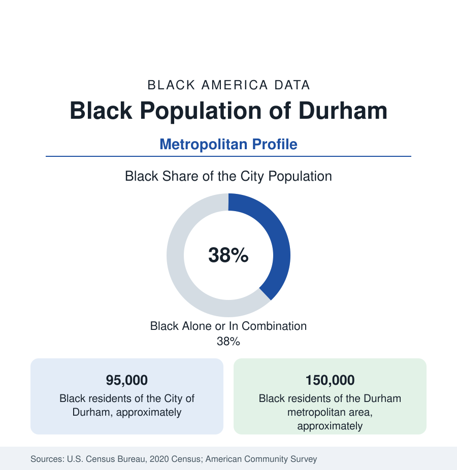

Black Cities
Black Durham: The Hayti District and Black Wall Street's Other Home
Durham holds about 95,000 Black residents in the city and 150,000 across its metro — the city that built Black Wall Street beside Tulsa. The census profile.

Durham holds about 95,000 Black residents within the city — Black alone or in combination, well over a third of its 290,000 people — and about 150,000 across the metropolitan area. No profile in this section carries a prouder business history: the Hayti district and Parrish Street made Durham, with Tulsa, one of the twin capitals of 'Black Wall Street' — and its modern data, powered by North Carolina Central University and the Research Triangle's overflow, read as that legacy's continuation by other means.
Hayti, Parrish Street, and the Freeway's Cut
The geography begins at the monument: Hayti — the prosperous Black district south of downtown named, tradition holds, for the Black republic of Haiti — held hundreds of Black businesses, the theaters and hotels of the Chitlin Circuit, and the homes of the tobacco aristocracy; Parrish Street downtown held the institutions themselves: North Carolina Mutual (the nation's largest Black insurer for a century, its 1921 headquarters tower still the skyline's elder statesman), Mechanics and Farmers Bank (1907, still operating, the banks profile's Carolina pillar), the Mutual Building and Loan, the printing and legal offices of the 'Black Wall Street' the national press named in Durham as early as Tulsa. The Durham Freeway (NC-147) was driven through Hayti in the renewal era — the section's most cited American case after Tulsa itself, the district's business count collapsing from hundreds to dozens in the highway's path — and today's Hayti holds the Hayti Heritage Center in the old St. Joseph's AME, a fraction of the commerce, and the community's organized memory, while the Black population's residential map fills the city's south and east and the subdivisions of the county's growth.
Tobacco's Heir: The University and the Triangle
Durham's tobacco economy (the cigarette factories whose Black workforce built Hayti's wage base) died by the 1990s, and the data's replacement arrived in two parts. North Carolina Central University — founded 1910 as a private religious school, the first state-supported liberal arts college for Black students in the nation's data, law school and all — anchors the south side with 8,000-plus students and the faculty-professional class around it. And the Research Triangle (Duke in Durham's west, the Park's campuses to the southeast) supplies the professional overflow: Durham's Black tech, pharma, and university workforce is the Triangle's most substantial, feeding the housing data of the city's booming downtown districts. The indicators reflect both: Black Durham posts incomes and education levels above the Southern city pattern — and redevelopment pressure at the legacy districts' edges that the affordability files track parcel by parcel.
Institutions of the Wall Street Generation
The institutional layer is the business section's history made durable: the Mutual's and M&F's surviving operations, the North Carolina Mutual legacy archives, the Black business associations descended from the Durham Business and Professional Chain (one of the oldest Black business leagues in the data, 1930s vintage), the churches of Hayti and the Hillsborough Road corridor, the Carolina Times (the Black newspaper, founded in the 1920s), and NCCU's law and business schools feeding the professional class their founders' generation deliberately built. The cultural record (the Hayti festivals, Durham's outsized music lineage, the Bull City's hip-hop and jazz scenes) monetizes at the American Tobacco Campus's stages across the tracks from where the district stood.
Change and the Estimates
The estimates show the metro among the South's fast growers, its Black population rising with it — south Durham's subdivisions and the county's edges absorbing the Triangle's growth, downtown's towers repricing the center, Hayti's remaining blocks the object of heritage-district and land-trust strategies the community's organizations press in the planning data. The school file (Durham Public Schools, substantially Black and Latino, its magnet system a regional draw) and the transit file (the aborted light-rail line's corridor still the region's planning spine) carry the civic agenda.
Reading the Durham Numbers
Durham is the Black Wall Street profile at its most complete: a community that built the insurance industry's Black flagship, lost its business district to a freeway, and rebuilt its prosperity on a university and a research park instead. Its 150,000 metro residents live downstream of the strongest institutional inheritance in this section — the data say the inheritance still pays.
More in Black Cities
Black Atlanta: Population, Distribution, and Growth of a Black Metropolis
Metro Atlanta holds more than two million Black residents — roughly one in three, second only to New York. The suburban distribution, migration history, and composition of Black Atlanta in the census data.
Black New York: The Largest Black Population in America
The New York metropolitan area holds about 3.4 million Black residents — more than any metro in the nation — and the city itself about two million. The census profile.
Black Washington: The District and the Metro
The Washington metro holds about 1.6 million Black residents, and the District itself — long a majority-Black city — now records a Black share near 41 percent. The census profile.
Source: U.S. Census Bureau, 2020 Census; American Community Survey; Population Estimates Program.